Overview
===========
This visualizer is built for use with any Building Automation lab found in the people counting folder. Following demos are supported:
* 3D People Counting
* Sense and Direct – HVAC control using IWR6843
* Long Range People Detection
* SDK Out of Box Demo
* (Deprecated) 16xx People Counting
* (Deprecated) 68xx People Counting (2D)
* (Deprecated) Overhead People Counting
Quickstart
===========
### 1. Launch the visualizer:
* Navigate to `C:\ti\<mmwave_industrial_toolbox_install_dir>\labs\people_counting\visualizer\mmWave_People_Count_GUISetup.exe`
* Run `mmWave_People_Counting_GUISetup.exe`
* This will open a wizard to install the Visualizer
* Once installed, you can run the "mmWave_People_Counting_GUI". It should take 5 - 10 seconds to startup.
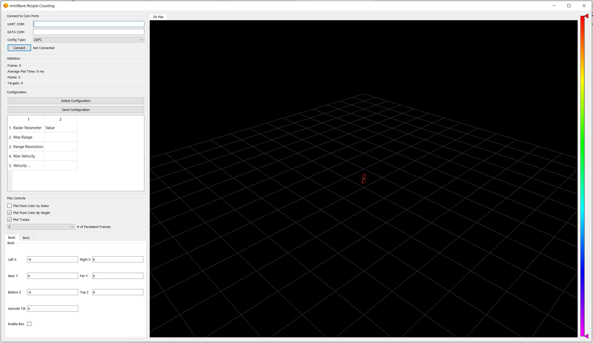
<a name="configure_visualizer"></a>
### 2. Configure Visualizer
-----------
On the left side of the visualizer setup window are options and parameters for running the demo. On the right side is a 3D graph which will display the demo point cloud and tracker output.
The following sections will step through the setup requirements to run the people counting demo:
#### 1. Select COM Ports
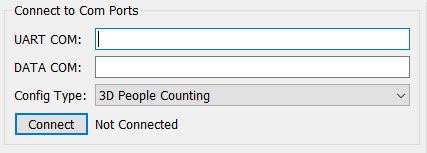
Specify **UART** and **DATA** COM ports using the text boxes. Only enter the number. Then select the parser type. The default is "3D People Counting". However, you can also select parsers for the following labs:
- Sense and Direct – HVAC control using IWR6843
- SDK Out of Box demo
- Long Range People Detection demo
- (Legacy): 2D People Counting (For both IWR16xx and IWR68xx)
- (Legacy): Overhead People Counting
Click **Connect** to open and connect to ports. Text saying "Connected" will appear after a successful connection to both the UART and DATA Com Ports. If the visualizer cannot connect to either Com Port, it will notify with text "Unable to Connect". If you selected the wrong parser, simply change the selection and click "Connect" again.
[[g! COM Status
Message should update to show that the COM ports have been connected before continuing.
]]
#### 2. Statistics
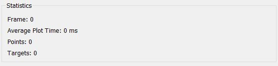
This section displays statistics related to the demo performance.
* Frame - current frame number as reported by the device
* Average Plot Time - time to draw the plot in ms
* Points - number of points detected this frame (more points may be drawn based on the Persistent Frames option)
* Targets - number of tracked people or other objects in the scene
#### 3. Chirp Configuration
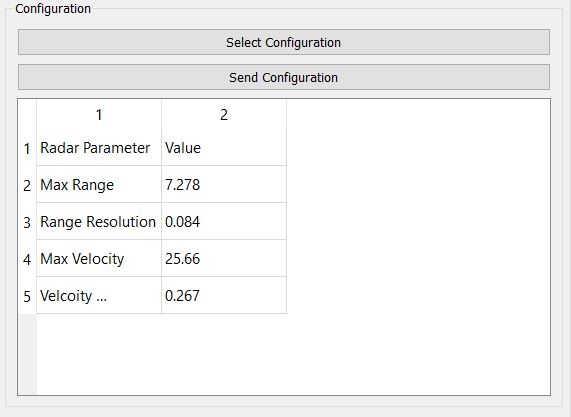
You will need to select a chirp configuration to send to the device.
* To load a custom config: select **Select Configuration** option and then choose the desired '.cfg' file. The plot will update with a red cube depicting the valid tracking area based on the SceneryParams or boundaryParams in the chirp config.
* The default chirp was developed for people counting in indoor environments with a max range of approximately 6m.
* Chirp configurations for other environments can be found on the <a href="http://dev.ti.com/tirex/explore/node?node=AP1aHhMqp-PFvRR0IX7sfA__VLyFKFf__LATEST" target="_blank">chirp configurations page.</a>
* Once a chirp is selected, the table below will populate with values for Range Resolution, Max Range, Velocity Resolution, and Max Velocity.
#### 4. Plot Controls
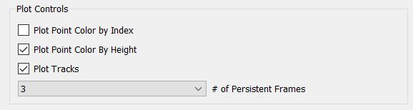
The box labelled *Plot Controls has 4 Options
* **Plot Point Color By Index** - points will be the same color as the track they are associated with. If a point is not associated with a track, it will be white.
* **Plot Point Color By Height** - points will be colored based on the Z value of the point. This is mutually exclusive with "Plot Point Color By Index"
* **Plot Tracks** - when this is on, boxes will be drawn at the location of tracked people in the scene. When this is off, only point cloud output will be visible. This does not disable the tracker.
* **Number of Persistent Frames** - this controls the number of frames plotted at a time. When set to a value n, points from the last n values will be plotted. This does not effect demo performance, use this to make the visualization easier to understand. 3 is default.
#### 5. Boundary Boxes
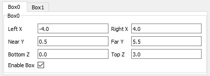
These define the valid tracking area. Up to two boundary boxes can be set. People can only be tracked when they are inside the boxes. Each box has 6 parameters, referenced in world coordinates with the sensor located at (X,Y,Z) = (0,0,SENSOR HEIGHT).
When standing behind the EVM, facing the same direction as the antenna:
* Left X - Left side of boundary box
* Right X - right side of boundary box
* Near Y - close boundary parallel with the EVM
* Far Y - Far boundary parallel with the EVM
* Bottom Z - Bottom Boundary
* Top Z - Upper Boundary
All modificaitons must be made before clicking **Send Configuration**.
Note: Changing these values in the GUI will modify the graphical output, but will not change the .cfg file parameters sent to the mmWave sensor. It is recommended to change these values in the .cfg file rather than directly in the GUI.
#### 6. Sensor Position
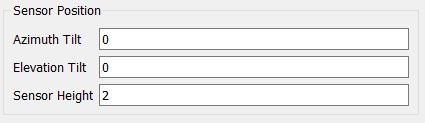
These define the location of the sensor. X and Y position of the sensor are always assumed to be 0. You can modify Z (height), Azimuth Angle, and Elevation Angle. These should be set in the configuration, but can be changed before or after sending the configuration.
* Sensor Height - height of the sensor with respect to the ground in meters
* Azimuth Tilt - azimuth tilt of the sensor with respect to the boundary box in degrees. Positive is counter-clockwise.
* Elevation Tilt - elevation tilt of the sensorl with respect to the boundary box (which is assumed to be flat with the ground), in degrees. Positive is down.
#### 7. Launch Visualizer
Click **Send Configuration** to configure the device and start tracking.
5. Understanding the Output
-----------
The visualizer consists of:
* A Grid made of light-grey lines, representing the floor
* 1 - 2 Red Boxes representing the boundary boxes
* Various colored spheres representing radar detection points. Coloration depends on the options discussed in Plot Controls.
* Various colored boxes representing tracked people. Color is based on the Tracker ID.
* Each track will have 3 digits next to it, representing (X, Y, Z) coordinates.
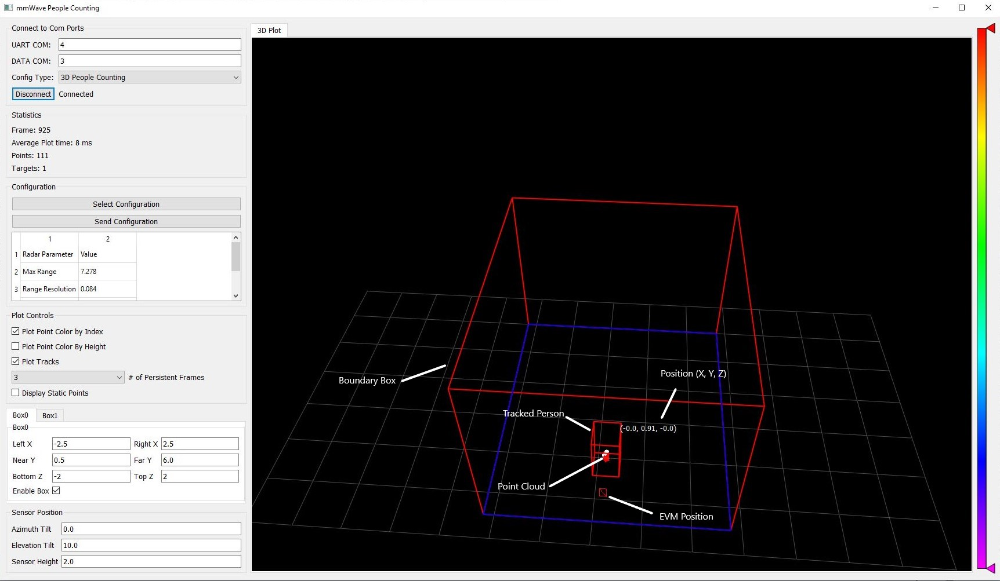
Developer's Guide
===========
<a name="visualizer_source"></a>
Visualizer Source Code
-----------
###Required: [Python 3.6 64 Bit](https://www.python.org/ftp/python/3.6.0/python-3.6.0-amd64.exe)
{{y Working with and running the Visualizer source files requires a Python 3.6 64 bit install. You can run with a 32 bit installation, but the behavior will be undefined.}}
<h3>Installing Python</h3>
Please download the Python installer from the link above. Once downloaded, follow the steps below:
1. Install for all users if option is available.
2. In optional features, make sure pip and the .py launcher are selected for install
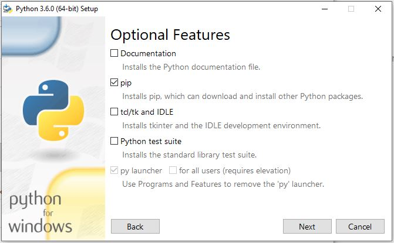
3. In Advanced Options, ensure "Add Python to environment variables" is selected.
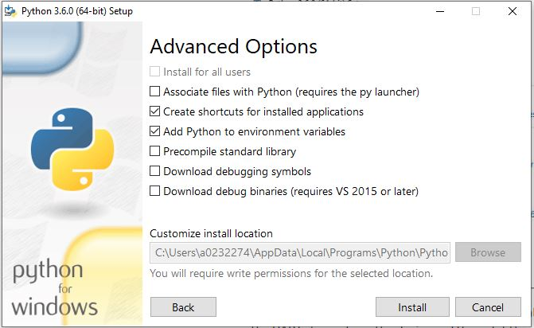
If Python is already installed, you can run the installer again to modify the installation.
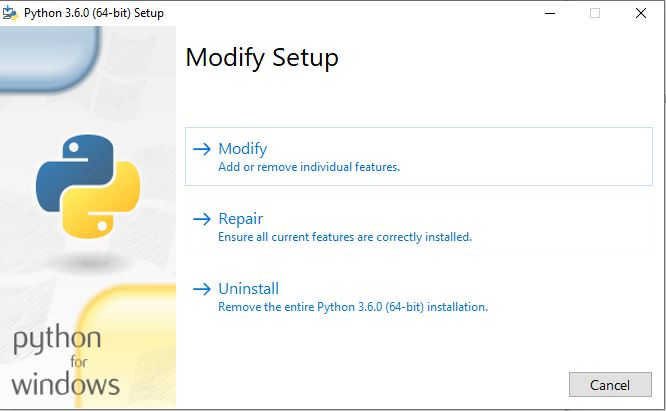
The detection processing chain and group tracking algorithm are implemented in the firmware. The visualizer serves to read the UART stream from the device and then plot the detected points and tracked objects.
Source files are located at `C:\ti\mmwave_industrial_toolbox_<VER>\labs\people_counting\68xx_people_counting\gui`.
* **gui_main.py**: the main program which controls placement of all items in the GUI and schedules UART read and graphing tasks.
* **oob_parser.py** defines an object used for parsing the UART stream. If you want to parse the UART data, you can use this file to do so. The API is defined at the top of the file.
* **gui_threads.py** defines the different threads that are run by the demo. These threads handle updating the plot and calling the UART parser.
* **graphUtilities.py** contains functions used to draw objects.
You will need to setup your python environemnt. The following libraries are used by the visualizer:
* PyQT5
* pyqtgraph
* pyopengl
* numpy
* pyserial
You can use the script setupEnvironment.bat to install all of these using pip. If you are on the TI Network, please use setupEnvironmentTI.bat. Otherwise you can install these libraries manually using pip or another method.
Once everything has been installed, you can run the visualizer by calling "python gui_main.py" on the command line.
Saving the Output
=================
The output data from the mmWave sensor can be saved for future use in 2 ways: as a binary bitstream of the UART data, and as a csv file of the frame headers and TLVs.
To save either of these files, in oob_parser.py, set self.saveBinary and/or self.saveTextFile equal to 1, save the file, then run start the gui as described above. The output data will be recorded relative to the mmWave sensor, not rotated for world coordinates as the display is.
Using Fall Detection
====================
If you are running the visualizer in [Developer Mode](#visualizer_source), you have the option to run a Fall Detection visualizer. This visualizer runs a simple fall detection algorithm, which is triggered when 1 and only 1 person is detected in the space. To run this visualizer, follow the steps to run in [Developer Mode](#visualizer_source) and call "python fallDetection_main.py" on the command line.
This will work with either the "Long Range People Detection" binary, or the "3D People Counting" binary. <b>"3D People Counting" is recommended.</b> A chirp configuration for using the fall detection feature with "3D People Counting" is included with the visualizer at: mmwave_industrial_toolbox_version\labs\people_counting\visualizer\chirp_configs\FallDetection\ISK_6m_default.cfg
When started, the visualizer will appear as follows:
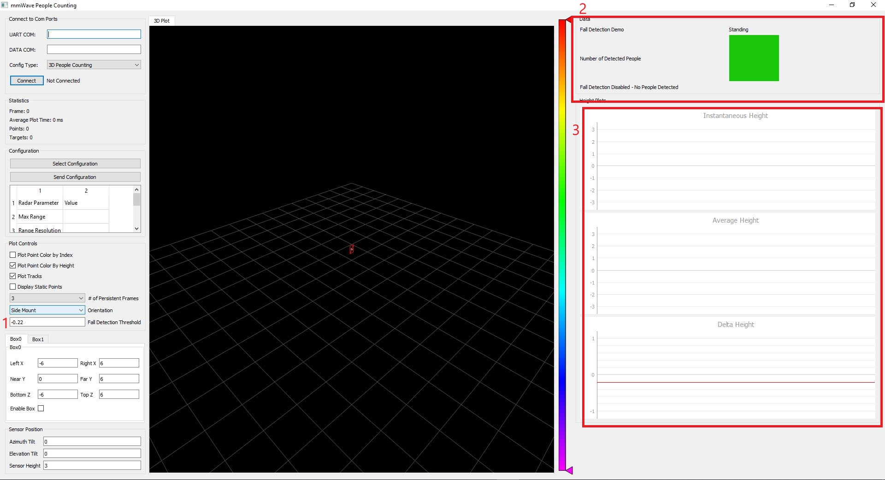
Run the visualizer as described [above](#configure_visualizer). The following sections of the visualizer differ from the standard:
1. Fall Detection Threshold - use this to set the fall detection threshold on the fly. You will see this represented as a red line in the bottom right graph.
2. Status Overview - this shows if the fall detection is active (only active when 1 and only 1 person is detected). This will show if a fall is detected. Falls reset after 5 seconds.
3. Fall Detection Line Plots - these show how the algorithm works.
* The top plot shows instantaneous calculated height of the tracked person.
* The middle plot shows the average height over the last 10 radar frames.
* This shows the measured height delta. This is calculated as (average height at frame N) - (average height at frame N-10). If this is below the threshold, a fall is triggered.
Need More Help?
===========
* Find answers to common questions on <a href="https://e2e.ti.com/support/sensor/mmwave_sensors/w/wiki" target="_blank">mmWave E2E FAQ</a>
* Search for your issue or post a new question on the <a href="https://e2e.ti.com/support/sensor/mmwave_sensors/f/1023" target="_blank">mmWave E2E forum</a>
* See the SDK for more documentation on various algorithms used in this demo. Start at <MMWAVE_SDK_DIRECTORY>/docs/mmwave_sdk_module_documentation.html>